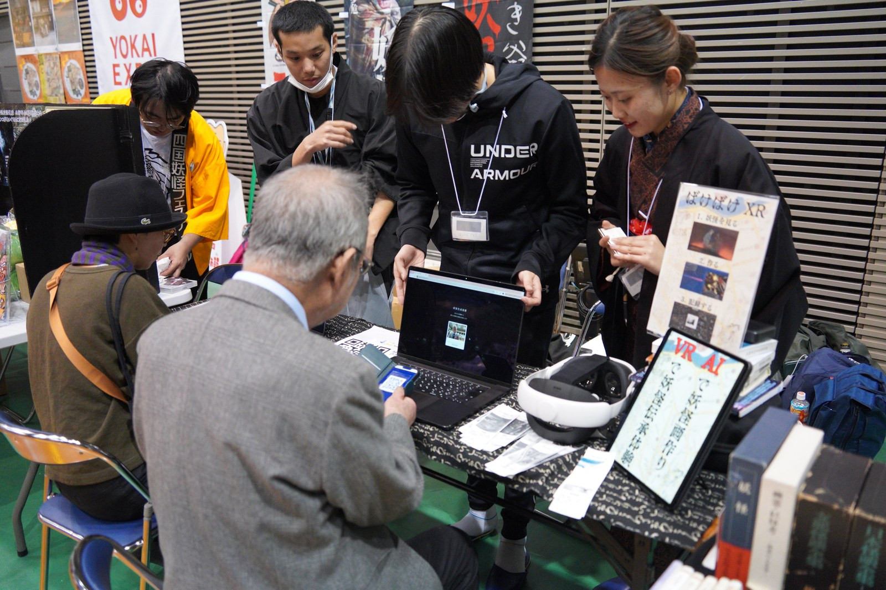

Computational analysis of yōkai folklore from large-scale archives, and a generative-AI-mediated platform for sharing and making sense of contemporary inexplicable experiences

One is computational analysis of the more than 35,000 records of the Database of Folktales of Mysterious Phenomena and Yōkai, re-reading the distribution, biases, and types of transmitted tales: place-name extraction and representation of geographic support, diagnosis of biases in yōkai type by region and concentration of sources, and search along separate axes of topic, region, and phenomenon. The other is to use yōkai as an interface through which people today can externalize and look at their own worries and unease, building and exhibiting an apparatus that generates a name and an image from a personal account. A visitor's account is matched against the archive, candidate names, narratives, and images are proposed, and the visitor accepts, edits, or rejects them. The result is printed on thermal paper and taken home.
Geospatial support representation, bias diagnosis, multi-axis related-record search. The yōkai map and related-yōkai search.
View MoreAn apparatus that generates a name, narrative, and image from an account, prints it on thermal paper, and hands it over. Exhibition and survey.
View More